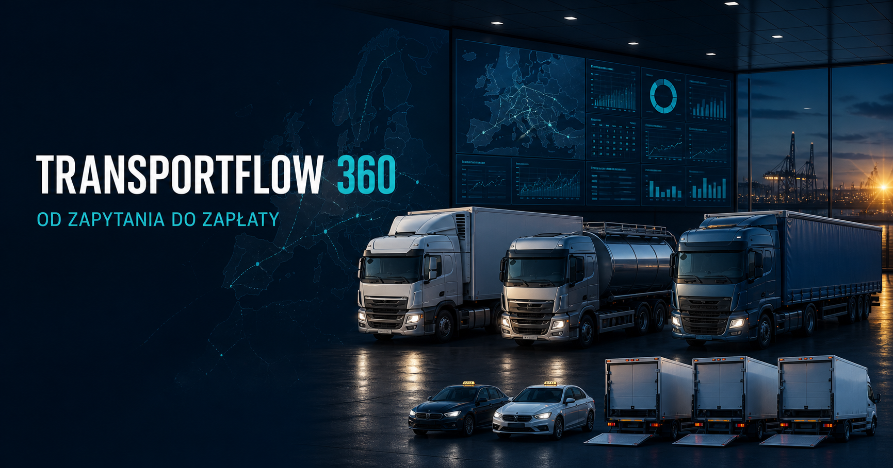
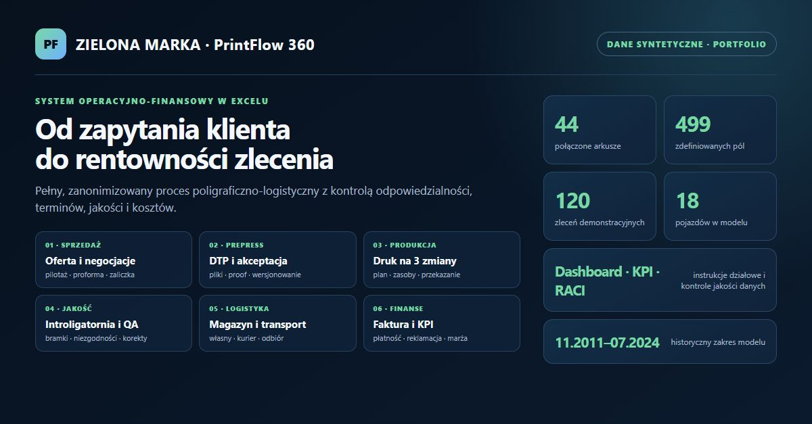

lat doświadczenia
Koordynacja, administracja, B2B i produkcja.
OPERATIONS · OFFICE · DATA
Koordynator operacyjny i specjalista ds. administracji z ponad 17-letnim doświadczeniem w obsłudze B2B, flocie, produkcji, raportowaniu i cyfrowym obiegu danych.
Portfolio zanonimizowane, bez danych firmowych, osobowych i operacyjnych klientów.
WYBRANE WYNIKI
Koordynacja, administracja, B2B i produkcja.
W tym 3 kontenerowe z windą; przeglądy, UDT, szkody i koszty.
Efekt analizy przyczyn i działań korygujących.
Poprawa jakości koordynacji i realizacji.
STUDIA PRZYPADKU
01 / OPERACJE
System kontroli 18 pojazdów w latach 2018–2024: serwis, 3 kontenery z windą, 11 leasingów, najem, kaucje, ubezpieczenia, szkody i wyposażenie taxi.
02 / DOKUMENTACJA
Weryfikacja CMR, WZ i kart drogowych, wyjaśnianie braków oraz cyfrowe porządkowanie dokumentacji do rozliczeń.
03 / B2B
Łączenie wymagań klienta z DTP, produkcją, introligatornią, magazynem i transportem, od oferty do reklamacji.
04 / DATA & AI
Struktura do porządkowania dokumentów, baz i powiązań, wspierana przez narzędzia AI oraz kontrolę jakości informacji.
05 / PRINTFLOW 360
Model Order-to-Cash łączący sprzedaż, DTP, trzy zmiany produkcyjne, introligatornię, jakość, logistykę, fakturowanie, kadry, nieruchomość i flotę.
06 / O PORTFOLIO
Opis celu portfolio, wykorzystanych technologii i zasad anonimizacji. Materiał wyjaśnia, dlaczego projekty powstały oraz jakie kompetencje prezentują.
07 / PWA I QA
Instalowalna aplikacja PWA pokazująca status zlecenia dla klienta oraz kolejki pracy dla handlu, produkcji, jakości, logistyki i administracji.
08 / TRANSPORTFLOW 360
Model od zapytania ofertowego i kalkulacji stawki po czas kierowcy, dokumenty, monitoring, dostawę, fakturę i płatność.
09 / WORKSHOPFLOW 360
Rynkowa symulacja niezależnego serwisu: od rezerwacji i diagnozy po kosztorys, zgodę, części, naprawę, kontrolę jakości, fakturę i wydanie auta.
10 / AUTO NAPRAWA, PREZENTACJA KLIENTA
Kompletna wersja pokazowa dla klienta: strona usługowa, status naprawy, widoki pracowników, pełny panel kierownika oraz demonstracja faktur i KSeF.
11 / WORDPRESS I WEB DESIGN
Autorski motyw WordPress dla firmy projektującej strony internetowe: nowy layout, oferta, realizacje, proces współpracy, formularz i techniczne podstawy SEO.
TRANSPORT · FLEET · COMPLIANCE
Zanonimizowany model zarządzania przewozem krajowym i międzynarodowym. Łączy handel, dyspozycję, czas pracy kierowcy, cykl życia pojazdu, dokumenty, kalkulację stawki, fakturowanie i widok klienta.
Wszystkie rekordy, identyfikatory, kwoty i trasy są demonstracyjne. Publiczny portal symuluje role; produkcyjne ograniczenie dostępu wymaga backendu i uwierzytelniania.

GŁÓWNY PROJEKT EXCEL
Zanonimizowany system operacyjno-finansowy pokazujący pełny cykl realizacji zamówienia w przedsiębiorstwie poligraficzno-logistycznym, od zapytania, oferty i zaliczki po produkcję, wysyłkę, fakturę, reklamację i analizę rentowności.
Publiczna wersja pokazuje pełną architekturę wyłącznie jako portfolio. Skoroszyt wykorzystuje tylko dane losowe i zanonimizowane; nie zawiera danych osobowych, rzeczywistych klientów, pracowników, pojazdów ani dokumentów źródłowych.

DOWÓD UMIEJĘTNOŚCI
Edytowalny skoroszyt pokazujący obsługę 18 pojazdów w latach 2018–2024. Łączy dokumenty, terminy, koszty, 11 leasingów, najem i kaucje, szkody, ubezpieczenia oraz wyposażenie samochodów do pracy taxi.
MINIAPLIKACJA
Prosty, lokalny panel demonstracyjny pokazujący relacyjną bazę danych pojazdów, najmu, kosztów i leasingu. Aplikacja działa bez zewnętrznych bibliotek: Python tworzy i obsługuje bazę SQLite, SQL liczy wskaźniki, a HTML/CSS prezentuje wyniki.
SAMODZIELNE REALIZACJE
Każdy projekt jest dostępny w tym portfolio i jako niezależne repozytorium. Dzięki temu rekruter lub klient może szybko przejść od krótkiego opisu do kodu, danych demonstracyjnych i dokumentacji.
01 / WEB APP
Nowoczesna strona demonstracyjna studia i drukarni z ofertą, realizacjami, formularzem oraz panelem PrintFlow.
Otwórz osobny projekt →02 / WORDPRESS
Autorski motyw firmowy z realizacjami, formularzem briefu i technicznymi podstawami SEO.
Otwórz osobny projekt →03 / EXCEL
Model Order-to-Cash: 44 arkusze, dashboard KPI, RACI oraz syntetyczne dane procesu produkcyjnego.
Otwórz osobny projekt →04 / PYTHON
Aplikacja procesowa z API, bazą SQLite, testami oraz dokumentacją jakościową.
Otwórz osobny projekt →05 / TRANSPORT
Portal, kalkulator i skoroszyt do demonstracji procesu transportowego od zapytania do zapłaty.
Otwórz osobny projekt →06 / PYTHON
Demonstracyjny system obsługi transportu z logiką aplikacji, testami i kontrolą jakości.
Otwórz osobny projekt →07 / WORKSHOP
Symulacja pracy serwisu samochodowego, od rezerwacji po wydanie auta i analizę KPI.
Otwórz osobny projekt →08 / FLEET
Lokalny panel Python i SQLite do pracy z flotą, najmem, leasingiem oraz kosztami.
Otwórz osobny projekt →09 / SERVICE
Strona warsztatu oraz demonstracyjny panel dokumentów i obsługi klienta.
Otwórz osobny projekt →10 / CLIENT PREVIEW
Publiczna ścieżka demonstracyjna łącząca stronę warsztatu, portal klienta, panel kierownika oraz faktury i KSeF.
Przeklikaj działającą wersję →SPOSÓB PRACY
Sprawdzam źródła, dane i kompletność przed wykorzystaniem wyniku.
Nie przekazuję do narzędzi AI informacji wrażliwych ani danych klientów.
Dobieram narzędzie do zadania i upraszczam proces zamiast go komplikować.